I found out that X lets you download an archive containing years of your tweets. Looking through a normal timeline isn’t really useful when you have hundreds or thousands of posts, so I started wondering: what if I could turn this archive into something I could actually explore? I wanted to search my old thoughts by meaning, ask questions about things I’ve written, rediscover forgotten ideas, and eventually generate new writing based on my own style, not saying AI should write for me of course, but just curious and might need a little help sometimes. So I worked on this simple Personal Thought Archive.
GitHub ↗
The first step wasn’t AI. It was understanding the data.
The downloaded archive contained a tweets.js file. It looked similar to JSON, but it was wrapped in JavaScript and contained nested objects with fields for the tweet text, date, language, likes, retweets, replies, and more.
I wrote a Python parser that extracts the tweet records and turns them into a cleaner JSON dataset.
Before analyzing anything, you have to understand the data's schema, decide which fields matter to your project, clean inconsistent values, and handle missing or duplicate records, datasets could be super super messy (might be intuitive to some but as still getting there in the field lol)
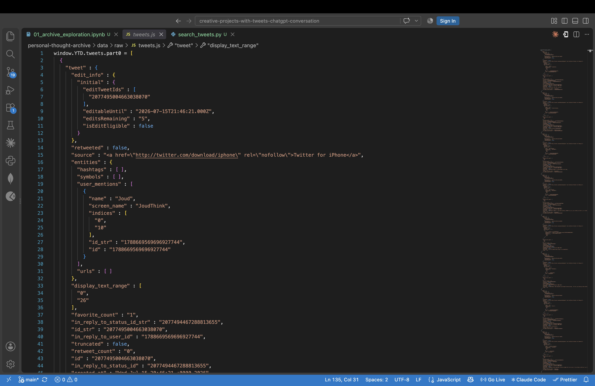
A script finishing without crashing doesn’t mean its output is correct. I created a validator to check that: Every tweet had an ID, text, and valid date, tweet IDs were unique, engagement values were valid numbers any empty records were removed, boolean fields were stored correctly, Arabic text and emojis were preserved. This was one of my favorite lessons from the project: validation isn’t an optional final step. It’s part of creating the dataset and manipulating it
Parser code and run
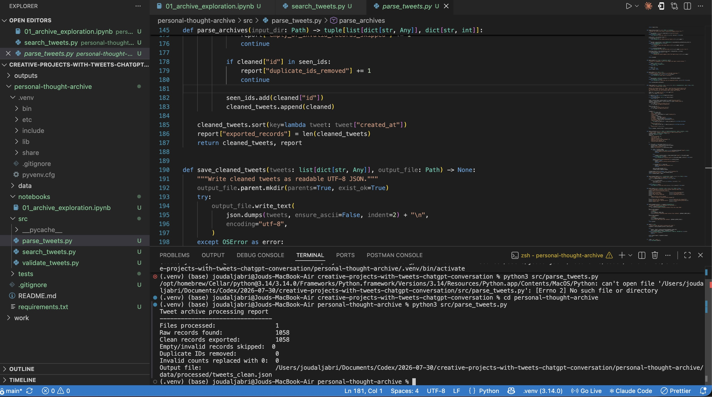
Cleaned data file
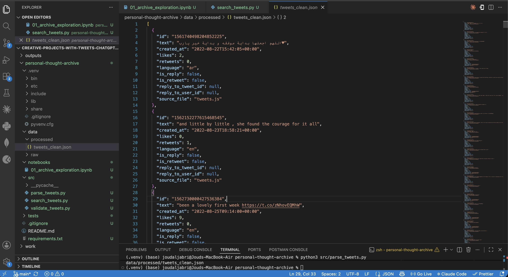
I found some intersting columns and though intially about using many of them, but for the sake of trying out for the first time and compeleting an inital draft of the project I used a few of the features, and some were: likes, retweets, language, is_retweet (The archive’s retweeted field is not reliable for identifying something I reposted. The parser instead checks whether the text begins with: "RT @") and source_file.
Although I checked the output once, those checks were temporary. We want a permanent program:
src/validate_tweets.py It will inspect `tweets_clean.json` every time you regenerate it and verify:
- It is valid JSON.
- Every tweet has the required fields.
- IDs are unique strings.
- Text is not empty.
- Dates are valid.
- Likes and retweets are non-negative integers.
- Reply and retweet flags are booleans.
- Missing values are counted.
- Arabic and emojis survived processing.
- Earliest and latest dates are reasonable.
This teaches an important data-science principle:
A pipeline succeeding does not automatically mean its output is correct.
Validator Results
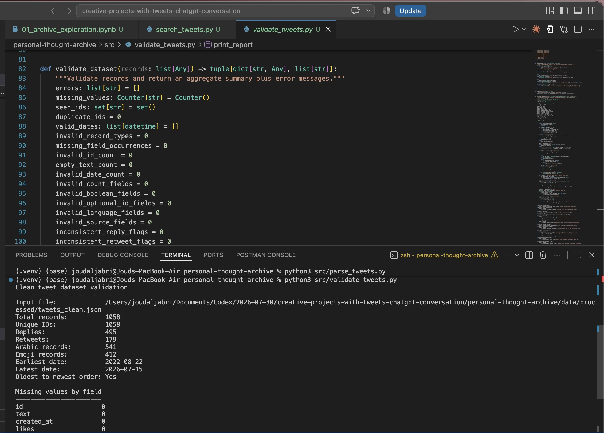
Missing Values Results
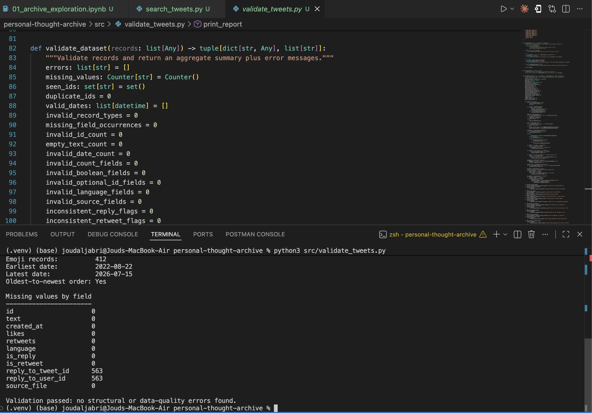
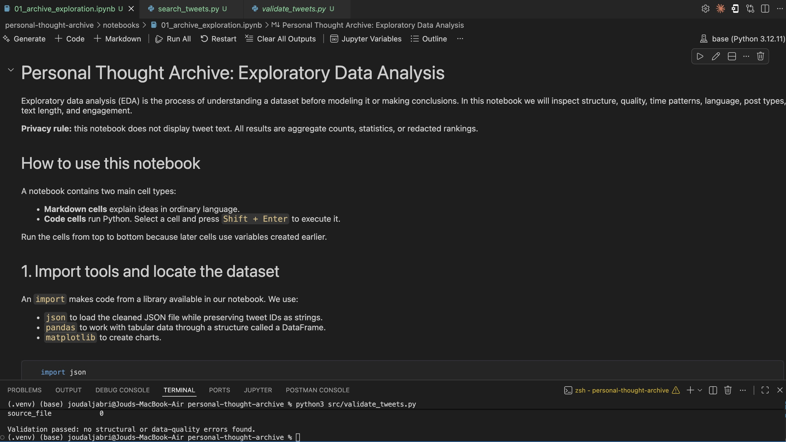
Once the cleaned data was ready, I loaded it into a Jupyter notebook with pandas and started exploring it. This was my first time actually trying jupyter notebooks in vs code. I looked at things such as: How many tweets were in the archive and My activity over different years
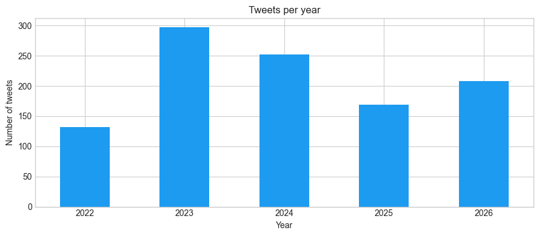
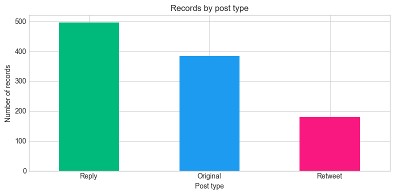
The proportion of original posts, replies, and retweets
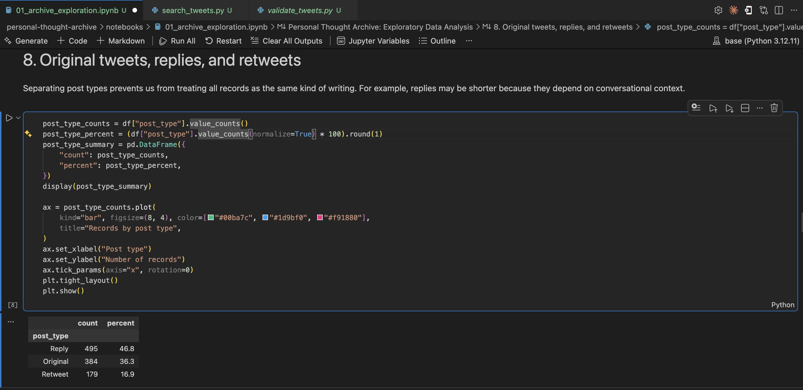
Tweet-length distributions
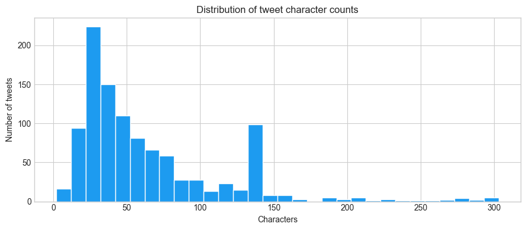
Engagement patterns
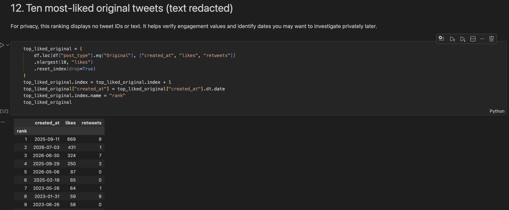
Before adding any AI, I built ordinary keyword search, also known as lexical search.
This let me confirm that the cleaned dataset was usable and that filtering worked correctly. I could search exact words and filter results by year, language, or post type.
It was useful, but it also exposed an obvious limitation: I had to remember the words I originally used.
If I searched for like “project-based learning,” it might miss a tweet where I wrote about students learning by building real products.
Which led to semantic search.
But if I searched for like “ai,” it could show results as follows:
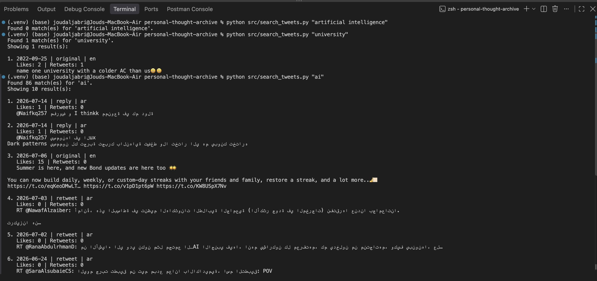
I've been wanting to explore RAGs and Embeddings and try them, so I generated an embedding for every tweet to build a semantic search.
An embedding represents the meaning of text as a vector—a list of numbers. Tweets with similar meanings should have vectors that are closer together, even if they don’t use the same words.
When I enter a search query, the program:
1. Converts the query into an embedding
2. Compares it with the saved tweet embeddings
3. Calculates similarity scores
4. Returns the closest tweets
I initially tested a local embedding model, but its dependencies and model files required much more disk space than I expected... I later changed the project to use an embeddings API and kept the generated index locally.
That change taught me about a practical engineering trade-off: local models provide more control and privacy, while APIs can make a small project easier to run and maintain.
So lexical search asks: Does this exact word appear in the tweet?
Semantic search asks: Is this tweet conceptually related to the question?
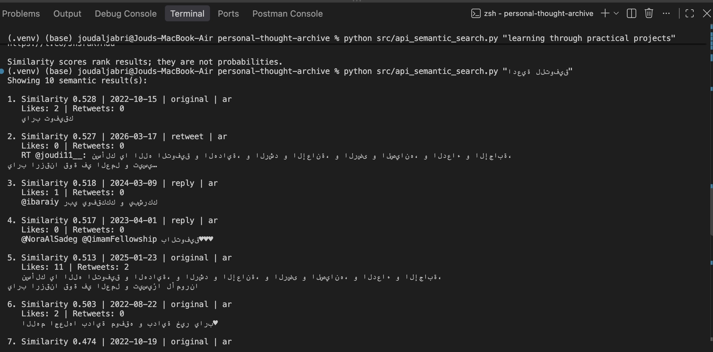
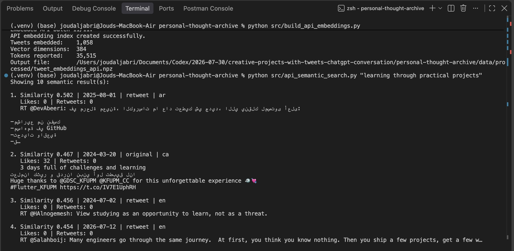
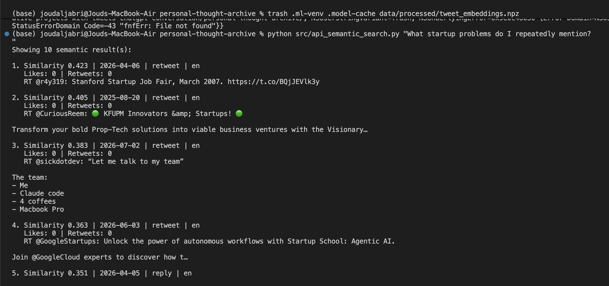
After semantic search worked, I built the core RAG feature: Ask My Archive. RAG stands for retrieval-augmented generation. Instead of asking an AI model to answer from its general knowledge, the program first retrieves relevant tweets and supplies them as evidence.
Question
→ Retrieve relevant tweets
→ Add them to the prompt
→ Generate a grounded answer
→ Cite the supporting tweets
For example, I can ask:
"What have I written about university education?"
The program retrieves related posts, excludes retweets by default, and generates an answer with numbered tweet citations.
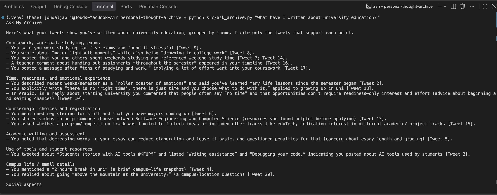
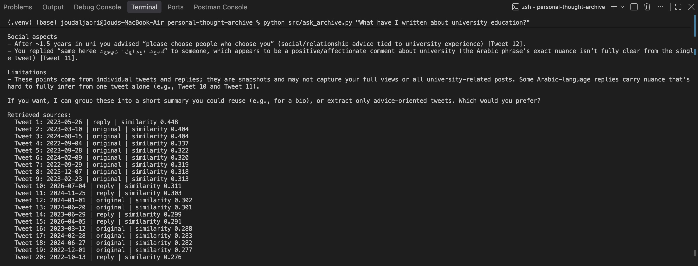
The results aren’t always perfect. I learned that a well-written AI answer can still be based on weak retrieval results. This made me think more carefully about similarity thresholds, source quality, and the difference between a fluent answer and a supported answer.
Alright I know many might not like this feature, but I had to try it. I wanted to try
what it was like to write like me in twitter (I refuse to refer to the app with X). I can enter a rough thought,
and the program retrieves similar original tweets from my archive. It then uses them as style examples
to generate three new drafts.
The old tweets are not treated as facts to copy. They are examples of tendencies such as sentence length, tone, phrasing,
and how I introduce ideas.
I also added instructions to prevent the model from copying complete sentences or inventing experiences and opinions.
This is another form of RAG, but instead of grounding a factual answer, retrieval helps ground the writing style.
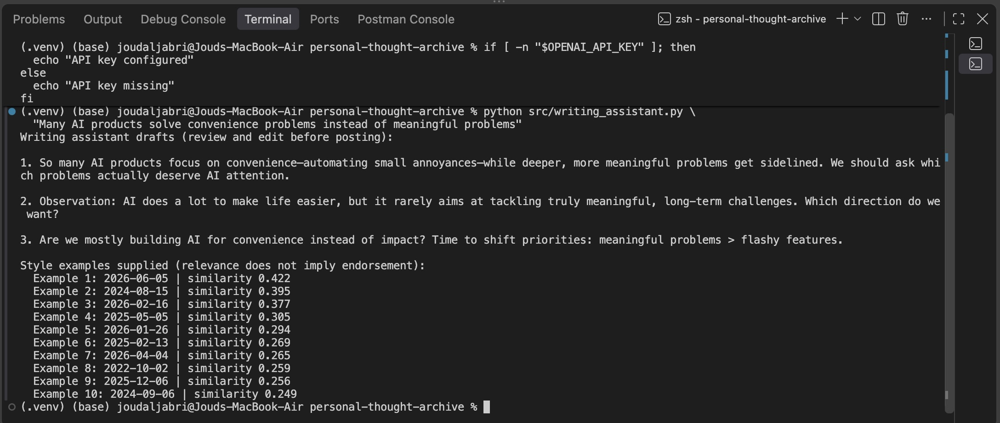
Last minute I decided to have a simple streamlit front end, but got too lazy to recapture the outputs on the frontend lol
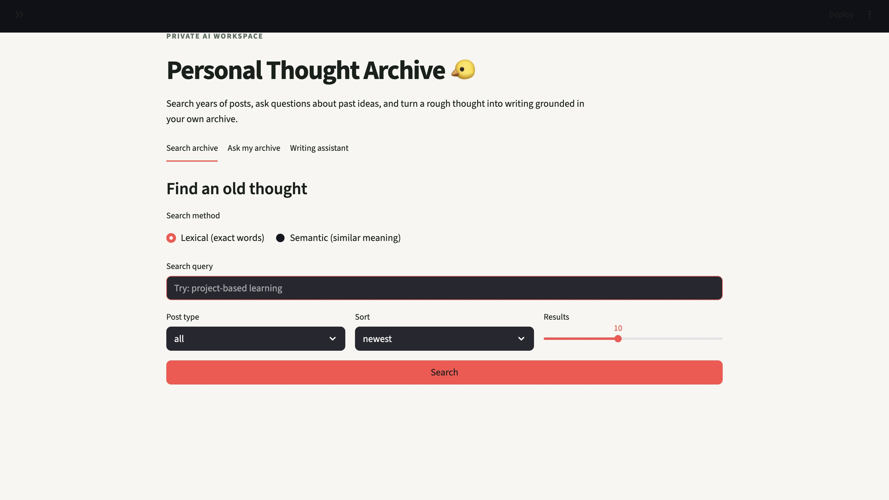